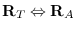

Primitive Body Creation
make-plane &key normal point distance [function]
-
-
Makes a plane object which is oriented to normal, and passes point.
Instead of giving point, distance can be specified.
*xy-plane* [variable]
-
-
*yz-plane* [variable]
-
-
*zx-plane* [variable]
-
-
Figure 10:
primitive bodies
|
make-cube xsize ysize zsize &key name color [function]
-
-
makes a cuboid whose sizes in x, y and z directions are xsize, ysize
and zsize.
The coordinates origin of this cuboid locates at the center of the body.
make-prism bottom-points sweep-vector &key name color [function]
-
-
Makes a prism by lifting the shape defined by bottom-points
along sweep-vector.
If the sweep-vector is a number, not a float-vector,
it is taken as the height of the prism in the  direction.
Bottom points must be ordered as they define the bottom face of the body.
For example,
(make-prism '(#f(1 1 0) #f(1 -1 0) #f(-1 -1 0) #f(-1 1 0)) 2.0)
makes a cube of height 2.0.
make-cylinder radius height &key (segments 12) name color [function]
-
-
Makes a cylinder with specified radius and height.
The bottom face is defined on xy-plane and the coordinates origin is
located at the center of the bottom face.
make-cone top bottom &key (segments 16) color name [function]
-
-
makes a cone body whose summit is the top
and bottom face is the bottom.
Top is a 3D float-vector.
Bottom is either a list of vertices of the bottom face or a radius
(scalar). If it is the vertices list, it is order sensitive.
(make-cone #f(0 0 10) (list #f(10 0 0) #f(0 10 0) #f(-10 0 0)
#f(0 -10 0))) makes a cone of a square bottom.
make-solid-of-revolution points &key (segments 16) name color [function]
-
-
Points are revolted along z-axis in the clock wise direction.
If two end points in the points list do not lie on z axis,
those points make circular faces. Thus,
(make-solid-of-revolution '(#f(0 0 1) #f(1 0 0)))
makes a cone, and
(make-solid-of-revolution '(#f(1 0 1) #f(1 0 0)))
makes a cylinder.
The points are order-sensitive,
and are expected to be arranged from higher coordinate
to lower .
make-torus points &key (segments 16) name color [function]
-
-
makes a torus, a donuts like object.
Points is a list of vertices on a cross-section.
make-icosahedron &optional (radius 1.0) [function]
-
-
Makes a regular body of twenty faces.
Each face is a regular triangle.
make-dodecahedron &optional (radius 1.0) [function]
-
-
Makes a regular body of twelve faces.
Each face is a regular pentagon.
make-gdome abody [function]
-
-
By subdividing triangle faces of abody into four subfacets,
makes a geodesic dome as a new body. Abody should be an icosahedron
initially, and then the result of make-gdome can be given to make-gdome
recursively.
At each call, the number of faces of the Gdome increases
by the factor of four,
i.e. 20, 80, 320, 1280, 5120, etc.
(setq g0 (make-icosahedron 1.0)) ; 20 facets
(setq g1 (make-gdome g0)) ; 80 facets
(setq g2 (make-gdome g1)) ; 320 facets
...
grahamhull vertices &optional (normal #f(0 0 1)) [function]
-
-
Computes convex-hull for 2D points by Graham's algorithm. Slower than
quickhull.
quickhull vertices &optional (normal #f(0 0 1)) [function]
-
-
Computes convex-hull for 2D points by the binary search method.
convex-hull-3d vertices [function]
-
-
Computes convex-hull for 3D points by gift-wrapping method.
make-body-from-vertices vertices-list [function]
-
-
creates a body from lists of vertices each of which define
a loop of a face in the consistent order.
2016-03-23